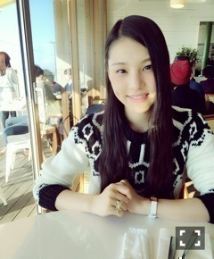
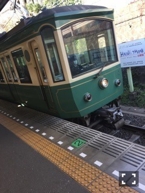
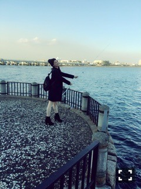
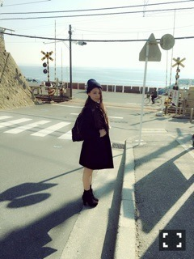
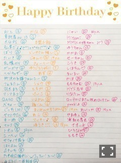

| 2016/01 23 Sat | ねむくナ～ル_(．．*)vol.62 |
みなさんこんばんはー！
さがらいおりです！
ひなちまとの江ノ島、鎌倉の旅！
今回のブログに書こうと思ってたんだけど
ひなちまのブログに
事細かに書いてあって、
何書こうってなってます、、
あと2ショットもたくさんあったので
私の方は1ショット多めで、、
すみません(。-∀-)
まずは、、
朝ごはんを食べに
billsへ

billsと言えば
スクランブルエッグ！と思って
オーガニックスクランブルエッグ/トースト、
フェンネルソーセージと
自家製レモネード飲みました！
美味しかったし
海を眺めながらの朝食は
サイコーでした♡
また行きたいなー
色んな所行ったんだけど
江ノ電に初めて乗って
なんとなく千と千尋の神隠しに
出てくる電車みたいでワクワクしたなぁ
あの、最後の方に
千と仲間達と一緒に
海の上走る電車、

4両くらいしか無くて
たまにホームが短いから
一番後のドアが開かなかったりして
驚き( p_q)
でもゆったりしてて楽しかった(*^^)v

そしてこれは
江ノ島をお散歩してて
知らないおじさんが
置いてた釣り竿を勝手には持てないから
距離と位置を調整して
持ってる風にした写真！
この後持ち主のおじさんに
「持っていいよ～」って言われて
持ってみたんだけど
いまいちカッコつかなかったから
笑ってる方載せました ノノ
スラムダンクに出てくる
ここにも行ってきました

ここかーー！ってなって
テンション上がったー！
スラムダンク大好き
私の青春の一部ですね、
また読みたくなってきちゃった(^^)
そして、
帰りは夕陽をバックにパシャリ☆
すごいキレイでしたー
沈むまで30分くらい待ってたの！
寒かったけど綺麗だったから
オールオッケー(^o^)/
地平線がずっと続いてて
どこまでも行ってみたくなった♪♪
こんな感じで笑いが耐えない1日でしたー♡
久しぶりにこんな笑えたし
また行きたいな(^_-)-☆
1月お誕生日の方♡

おめでとうございます♡
コメントしたけど、
書いてなかったらすみませんm(_ _)m
~いおり庵~
 AKBグループに推しメンはいますか？
AKBグループに推しメンはいますか？
まゆゆさんと
山本彩さん！
髪の毛に何かこだわってる事はありますか？
すぐ絡むから頻繁にとかしてるよー！
あと冬は静電気がすごいので
オイルを付けたりしてます(^o^)/
いおりはディズニーと富士Ｑどっちが好き？
富士Ｑの方が好き！
でも1回しか行ったことないんだー(^^;
あ、ディズニーも今度友達と
行く約束したよー♪♪
あ、皆さん今期のドラマ何見てますか？
私は
ナオミとカナコ
家族ノカタチ
わたしを離さないで
だけ見てる！
皆さんが観てるドラマで
オススメありますか？
 1/23発売 月刊ザテレビジョン
1/23発売 月刊ザテレビジョン
未央奈とみり愛と一緒に
バレンタインの思い出などをお話しました♡
プレゼント企画もあるので
是非見てみて下さい！
よろしくお願いしますmm(_ _)m
i o r i .

コメント(284)
2016/01/23 21:06